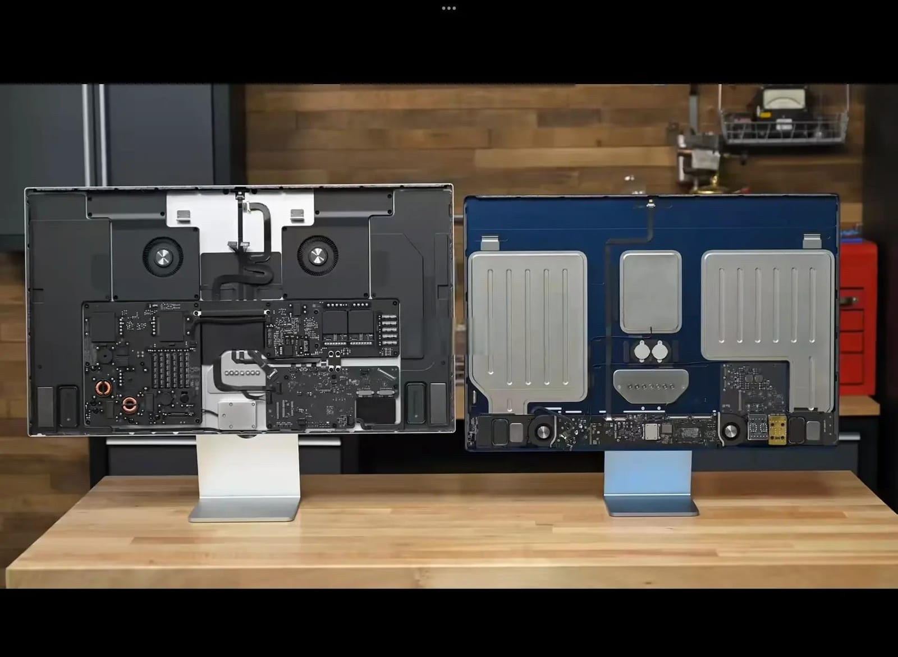

苹果 Studio Display

苹果 27 英寸 5K 视网膜显示屏，5120×2880 分辨率与 600 尼特亮度，P3 广色域原彩显示，macOS 像素级完美适配。内置 A13 芯片、1200 万像素人物居中摄像头与六扬声器系统，一根雷雳线连接 Mac，是 Mac 用户梦寐以求的桌面搭档。
客观评测
Studio Display 配备 27 英寸 5120×2880 IPS 面板，600 尼特亮度与 P3 广色域 10 亿色彩，配合 macOS 2 倍缩放，文字图像细腻度远超普通 4K 屏。内置 A13 芯片驱动 1200 万像素摄像头的智能人物居中，六扬声器与三麦克风提供优秀的音视频体验。接口为一个雷雳 3（96W 供电）与三个 USB-C，可作 Mac 连接中心。短板是 60Hz、可调支架需加钱，价格高端。
主观点评
把它和 MacBook 合上盖一放，整个桌面瞬间变成苹果体验店，显示细腻度让人看文档都心情愉悦，六扬声器外放效果更不是普通显示器能比。但它是「Mac 专属奢侈品」：Windows 用户别碰，60Hz 让游戏玩家失望，可调支架还要加钱也让人不爽。如果你是 Mac 用户且预算充足，它是能让工作台气质升华的选择。
优点与不足
- 5K 分辨率配 macOS 渲染，文字图标细腻锐利
- 六扬声器与摄像头音箱一体，桌面极简
- 全铝机身做工精致，与 Mac 风格统一
- 价格高昂，且支架高度可调版另收费
- 仅 60Hz，无 ProMotion 高刷
- 标配玻璃面板反光明显，纳米纹理版加价
参数规格
| 尺寸 | 27 英寸（16:9） |
|---|---|
| 面板 | IPS（广视角） |
| 分辨率 | 5120×2880（5K 视网膜） |
| 刷新率 | 60Hz |
| 响应时间 | 未标注（约 10ms 级） |
| 色域 | P3 广色域，10 亿色彩，原彩显示 |
| 亮度 | 典型 600 尼特 |
| HDR | 支持 HDR 内容播放（峰值 600 尼特） |
| 对比度 | 1200:1（典型） |
| 接口 | 雷雳 3×1（96W 供电）、USB-C 10Gbps×3 |
| 支架 | 倾斜支架；另有可调高度支架与 VESA 版本 |
| 音视频 | 1200 万像素超广角摄像头（人物居中）、六扬声器系统 |
| 其他 | 内置 A13 芯片，可选纳米纹理玻璃面板 |